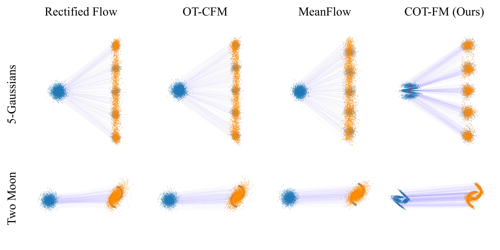

CNP-Flow: Unified Temporal Flow Matching via Conditional Noise Prediction
In submission, 2026.
I am a Research Assistant at National Taiwan University, advised by Tsung-Wei Ke. I work toward scalable robot learning: robots that acquire broad skills without a proportional increase in costly real-world data. I see two bottlenecks on this path. Effective feature learning asks which representations expose the structure a policy needs; my work so far studies this through the transport structure of flow-matching models and task inference in behavioral foundation models. Efficient exploration asks how an agent should gather the experience those representations are learned from, and it is the direction I want to pursue next. I am applying to PhD programs for Fall 2027.
In submission, 2026.
NeurIPS 2026 PTA Workshop

IEEE VTC 2026
* Equal contribution. † Corresponding author.
Jan 2025–Present
Research Assistant · Advisor: Professor Tsung-Wei Ke
Sep 2024–Jan 2026
Research Assistant · Advisor: Professor Chung-Wei Lin
Fall 2025
TA
Jul–Aug 2024
Software Engineering Intern